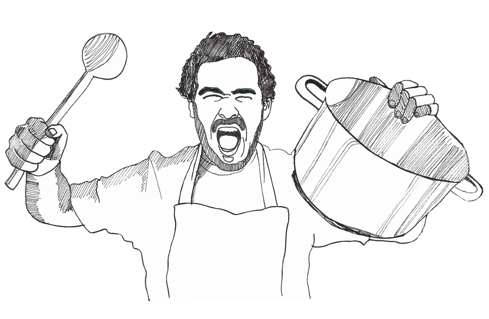
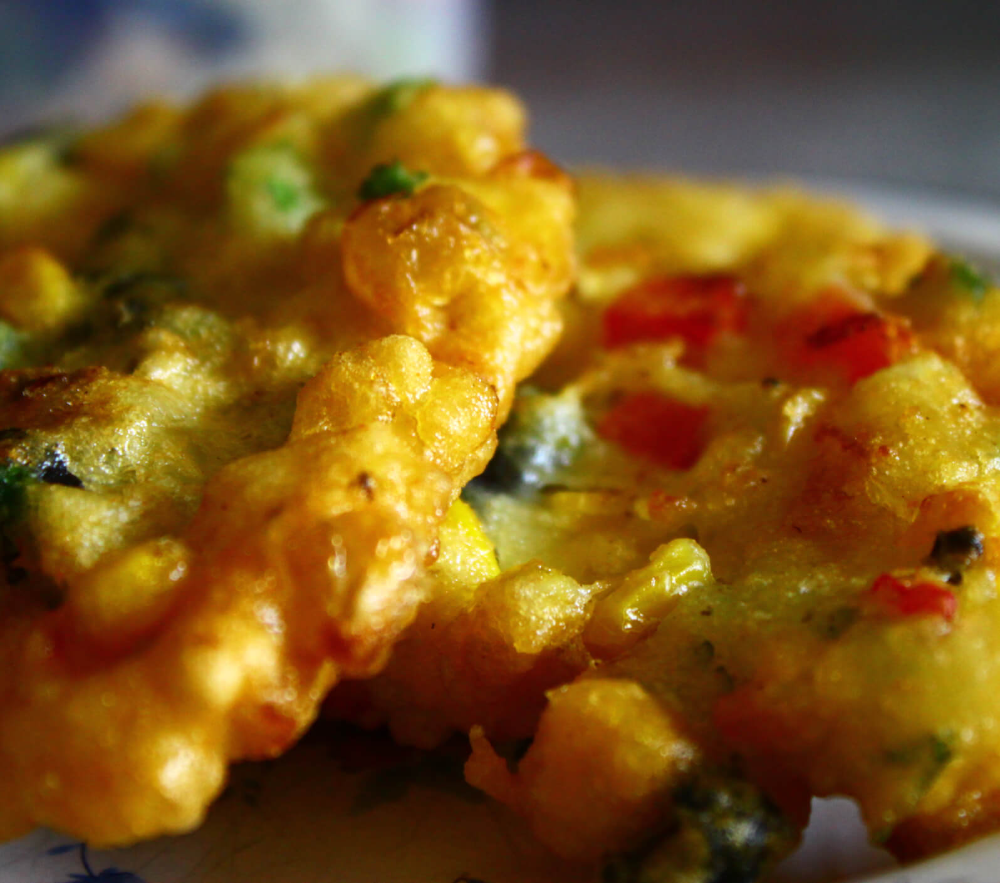

As papas do Pápã
Início
Peixe
Carne
Vegetarianas
Sobremesas
As mais votadas
Sobre o projeto
Receitas vegetarianas
Cogumelos recheados com abóbora e ovos mexidos
Farfalle de cogumelos e azeitonas com queijo da ilha e cominhos frescos

Pataniscas de legumes ao molho de iogurte com ervas e pepino
Quiche vegetariana
Risotto de cogumelos e vinho do porto com parmesão e mangericão
Creme de cogumelos com cenoura e abóbora